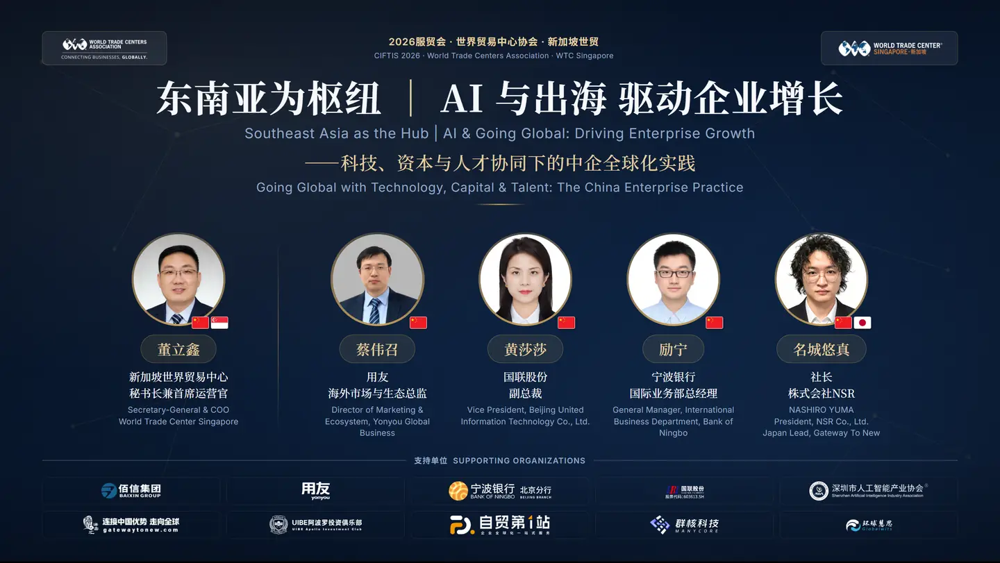
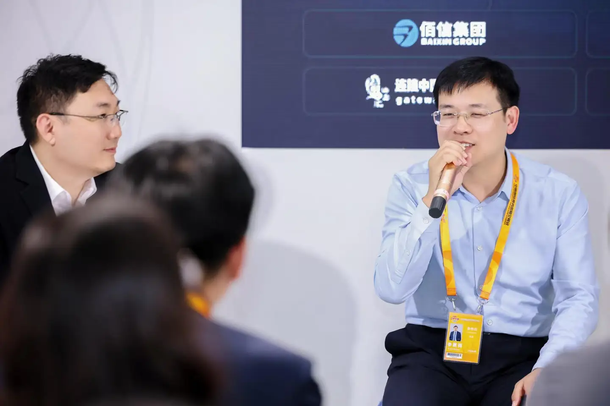
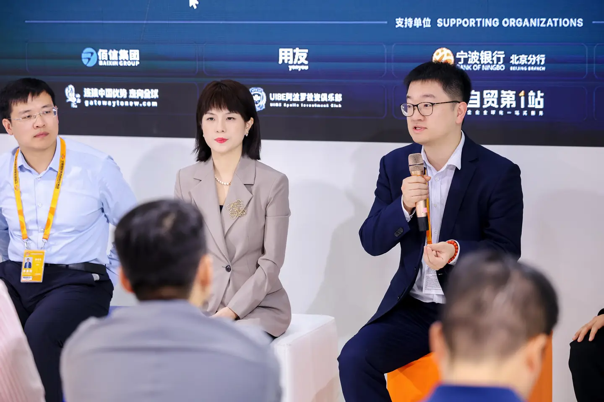
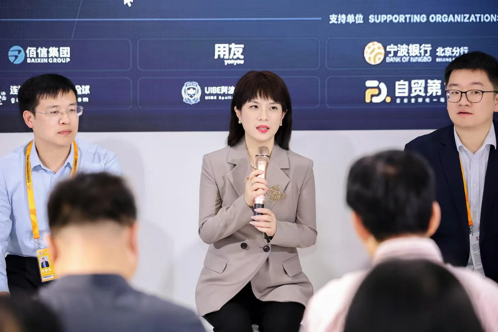
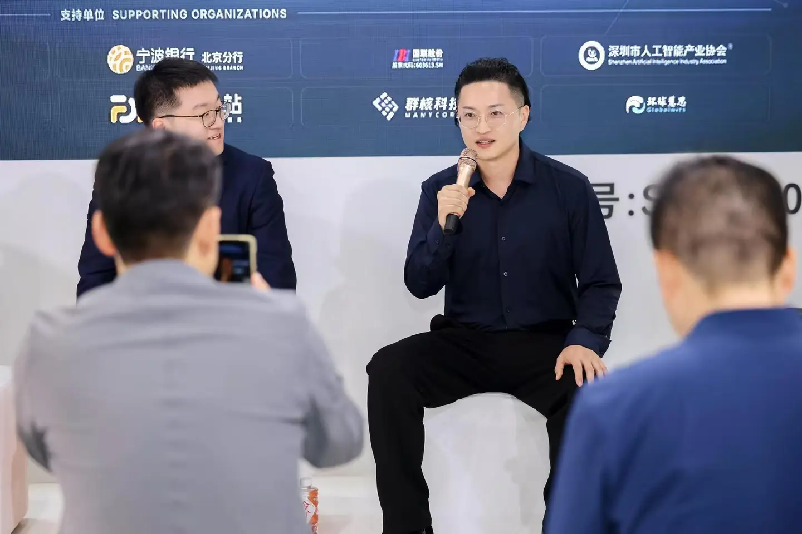
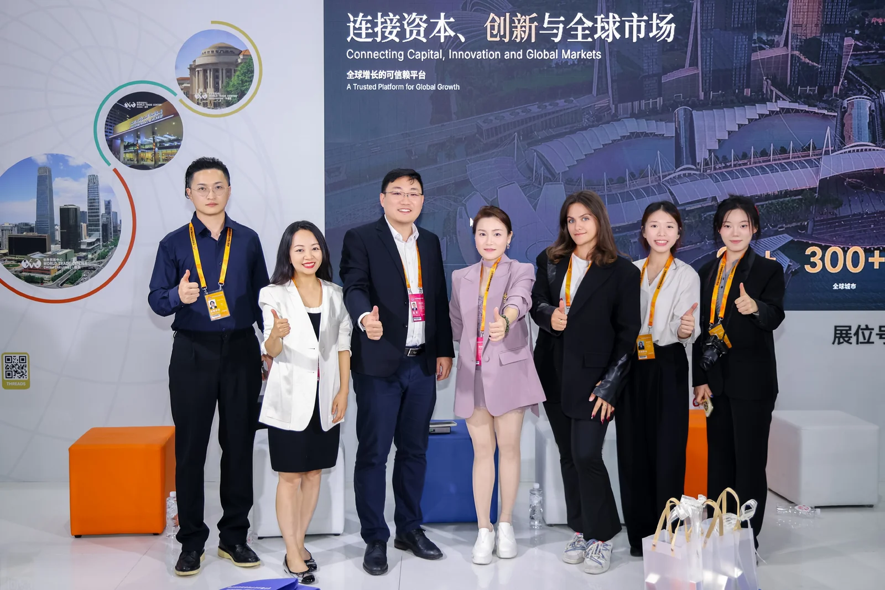
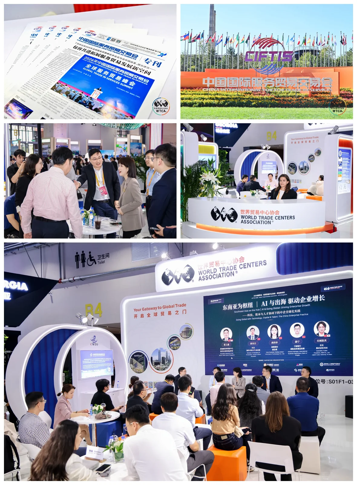

北京，2026年9月11日——2026年中国国际服务贸易交易会（服贸会）期间，新加坡世界贸易中心秘书长兼首席运营官董立鑫，受邀在北京首钢园展馆世界贸易中心协会（WTCA）专属展区，主持题为“东南亚为枢纽·AI与出海 驱动企业增长——科技、资本与产业协同下的中企全球化实践”的圆桌对话，聚焦AI技术如何重构中国企业全球化路径，邀请来自科技、金融、产业与海外一线的四位嘉宾展开深度交流，构成“科技—金融—产业—海外”四个维度的对话阵容。
本届服贸会由北京市人民政府、中华人民共和国商务部联合主办，是国家级、国际性的服务贸易对外开放平台。世界贸易中心协会（WTCA）是服贸会全球仅有的五家官方国际合作组织之一，与世界知识产权组织（WIPO）、国际贸易中心（ITC）、世界贸易网点联盟（WTPF）、全球服务贸易联盟（GATIS）并列，自2016年起与服贸会建立长期深度合作，每年通过设立WTCA专属展馆、举办主题论坛及B2B商务对接会等方式深度参展，依托全球近100个国家和地区的城市成员网络，推动服贸会在海外的品牌传播与产业对接。

AI 改变的不是效率，而是出海的决策方式
董立鑫在开场时表示，过去中国企业出海更多是把国内已经跑通的业务模式复制到海外，而AI正在改变这套逻辑本身。他指出：“AI将不再只是出海企业的效率工具，而会重构企业选择市场、配置资本和搭建本地团队的底层逻辑。”他进一步提出判断：“谁先把AI用在决策层，而不只是执行层，谁就能在东南亚这个枢纽上跑得更快。”他表示，东南亚之所以成为中企出海首选，正因为它同时是AI技术落地、资本配置与产业机遇的交汇点。
“AI将不再只是出海企业的效率工具，而会重构企业选择市场、配置资本和搭建本地团队的底层逻辑。”
—— 董立鑫，新加坡世贸 秘书长兼首席运营官科技视角：出海首先是数据和系统的全球化，而非模型的全球化
用友海外市场与生态总监蔡伟召指出，中国企业的数字化出海路径没有“一刀切”的答案，需要结合企业规模、出海阶段与行业实际因地因时制宜。他表示，大型企业宜在出海之初统筹全球经营系统，将营销、供应链、财税合规纳入同一底座设计；中小企业则可从云化、轻量化工具起步，先跑通关键业务，再逐步扩展。他同时强调，无论规模与行业如何，中国企业过去“复制型出海”的经验正在被 AI 改写，真正的共性瓶颈不是模型能力够不够，而是国内外数据和业务系统没有打通——把“系统孤岛”连成网，AI 才能从客服、翻译等执行层效率，延伸到市场判断、供应链配置、财税合规等决策环节。用友服务企业出海二十余年，目前在海外设立14个分支机构，拥有超过200家合作伙伴，服务覆盖40余个国家和地区的2300多家企业客户，产品支持多语言、多国别本地化套件，并在海外部署数据中心以满足客户合规与数据安全需求。用友的产品矩阵正以AI为核心，从财务、人力、供应链、制造等核心业务场景全面升级，助力全球企业从数字化管理迈向智能化运营。

金融视角：出海企业的全链条服务
宁波银行北京分行国际部总经理励宁表示，当前中资企业出海步伐日渐加快，但走出去过程并不轻松，面临一系列挑战。宁波银行升级推出“全球赢”服务体系，以“17+9+N”为核心，17项海外投资服务覆盖出海全生命周期，9项海外金融服务，全行已累计服务出海企业超1000家。在这个过程中，宁波银行希望不仅仅是金融服务商，更要做好信息的“校准器”和资源的“连接器”，成为企业全方位、一体化的出海合作伙伴。

产业视角：产业互联网平台，把产业带带向全球
国联股份副总裁、卫多多纸多多CEO黄莎莎从产业互联网平台的视角，分享了产业带出海的实践观察。她表示，国联股份旗下卫多多、纸多多、肥多多、粮油多多、涂多多等平台连接着多个产业带，产业带企业出海最常卡在渠道、供应链与本地信任环节，而产业互联网平台的价值，正在于帮企业做跨境供需匹配、价格发现与供应链数字化。她指出，中国企业出海往往面临“产品力不等于市场力”的坎——产品做得好，不代表在当地市场站得住，数据打通与本地信任，恰恰是平台能替企业解决的关键环节。她表示，产业互联网平台的全球化路径，本质上是以数字化链路为牵引，将中国产业带的集群优势转化为抱团出海的体系化竞争力。

日本经验：技术能降低进入成本，未必能替企业省下建立信任的时间
株式会社NSR社长，名城悠真从日本企业自身的出海历史出发，分享了双向借鉴的观察。他表示，日本企业当年正是率先“出海”东南亚才完成全球化第一阶段的增长，这段经验对今天的中国企业具有直接参考价值；反过来，中国企业想真正打入日本市场，同样需要经历本地化验证的过程，“日本市场对信任的要求比对价格的要求更高，谁能先赢得信任，谁的产品才有机会在这里实现增长”。他同时提出：“AI或许能降低企业进入一个市场所需的组织成本，但不会消除建立本地信任所需要的时间。”
“AI或许能降低企业进入一个市场所需的组织成本，但不会消除建立本地信任所需要的时间。”
—— 名城悠真，株式会社 NSR 社长
AI 时代，出海最终比拼的是“结合速度”
董立鑫在总结时表示：“AI时代企业出海最终比拼的，不是单一的AI技术，而是技术与资本、数据、产业、合规和本地信任体系的结合速度。”他表示：“新加坡世贸将继续依托WTCA全球网络，把资本、技术、信任这三件事，带到更多东南亚枢纽城市、更多AI驱动出海的具体项目里去。”
“AI时代企业出海最终比拼的，不是单一的AI技术，而是技术与资本、数据、产业、合规和本地信任体系的结合速度。”
—— 董立鑫，新加坡世贸 秘书长兼首席运营官

据悉，本场对话是新加坡世界贸易中心在本届服贸会WTCA专属展区举办的第二场圆桌论坛。此前，题为“侨联搭桥·世贸通衢——生命健康产业的全球化路径与生态构建”的圆桌对话已聚焦生命健康产业出海议题举行。在全球经济格局深度调整、存量竞争加剧的背景下，新加坡世贸将继续秉承“链接资本、创新与全球市场”的定位，依托WTCA全球网络优势，为中国企业“引进来”“走出去”提供更广阔的合作空间。

关于世界贸易中心协会
世界贸易中心协会（World Trade Centers Association，简称WTCA）成立于1970年，是一个非营利、非政治性机构，致力于全球各地世界贸易中心的建立和有效运营，以此促进地区经济发展、助推国际贸易和投资。协会总部位于美国纽约，全球网络包括近100个国家和地区的300多个世界贸易中心，向成千上万的企业成员和客户提供服务，帮助他们开拓货源、增加客源并提升投融资机会。
关于新加坡世界贸易中心（WTC Singapore）
新加坡世界贸易中心是世界贸易中心协会（WTCA）在新加坡的官方授权成员，依托WTC ONE Club、GlobalX、WTC Fund三大业务板块，致力于连接全球资本、创新资源与市场机会，为企业提供跨境资源对接与全球化落地支持。